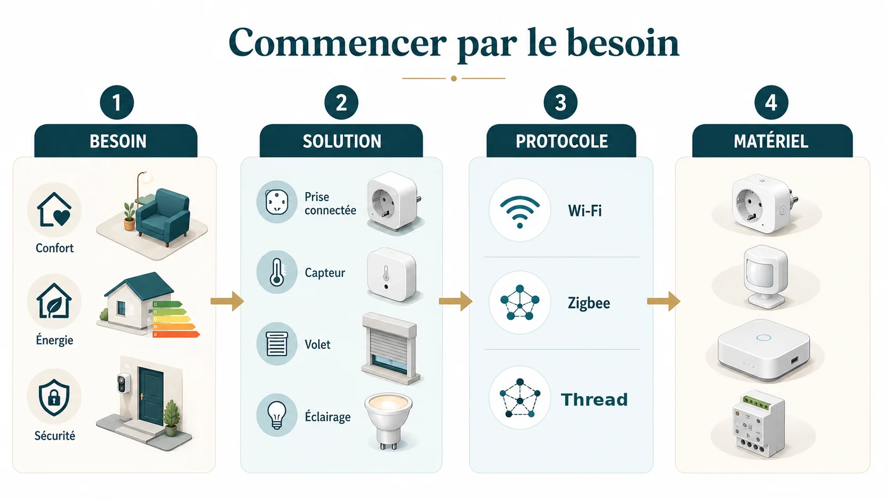
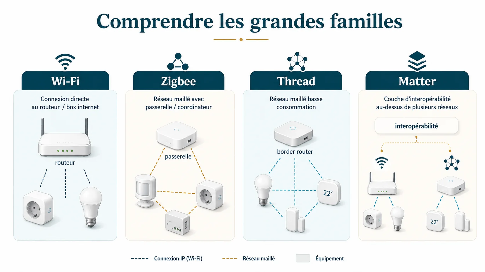
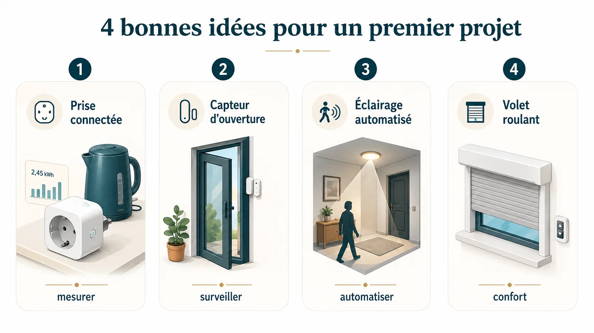

Quand on découvre la domotique, le plus difficile n’est pas de trouver du matériel. C’est exactement l’inverse : il y en a partout. Ampoules Wi-Fi, capteurs Zigbee, prises Matter, box domotiques, assistants vocaux… et chaque fabricant explique évidemment que sa solution est la plus simple.
Résultat : on peut très vite acheter trois appareils qui fonctionnent parfaitement chacun de leur côté, mais qui obligent à ouvrir trois applications différentes pour éteindre la maison. Techniquement, c’est connecté. Au quotidien, c’est surtout pénible.
La bonne méthode consiste donc à faire les choses dans l’autre sens : partir de ce que tu veux améliorer dans la maison, puis choisir la technologie qui répond au besoin. Pas l’inverse.

1. Commence par le besoin, pas par le rayon domotique
Avant de choisir une marque ou un protocole, pose-toi une question beaucoup plus simple : qu’est-ce que je veux réellement améliorer ?
Quelques exemples :
- Confort : fermer plusieurs volets en une seule action, éteindre la maison depuis le lit, adapter l’éclairage selon l’heure.
- Énergie : suivre la consommation d’un appareil, baisser le chauffage en cas d’absence, éviter de chauffer une pièce inutilement.
- Surveillance : savoir qu’une porte est restée ouverte, être prévenu d’une fuite d’eau, contrôler l’état du garage à distance.
- Automatisation : allumer une circulation seulement lorsqu’elle est utile, fermer les volets au coucher du soleil, déclencher une ambiance quand la maison passe en mode soirée.
Ce choix paraît évident, mais il change tout. « Je veux une maison connectée » n’est pas un projet. « Je veux que les volets se ferment automatiquement le soir tout en conservant les commandes murales » en est un.
2. Choisis le bon niveau de départ
Tout le monde n’a pas besoin de Home Assistant, d’un serveur, d’un tableau électrique rempli de modules ou de dix scénarios dès la première semaine. Pour simplifier, on peut distinguer trois niveaux.
| Niveau | Pour quoi faire ? | À retenir |
|---|---|---|
| 1. Quelques objets connectés | Une prise, une lampe, un petit besoin isolé. | Simple et peu coûteux, mais attention à ne pas multiplier les applications. |
| 2. Un écosystème cohérent | Capteurs, éclairages, volets, chauffage, automatismes. | On commence à réfléchir au protocole, à la passerelle et à l’évolutivité. |
| 3. Une installation centralisée | Plusieurs technologies, scénarios avancés, fonctionnement local, maison complète. | Une vraie plateforme domotique devient pertinente, mais demande davantage de configuration. |
Niveau 1 : un premier objet connecté
Pour commander un lampadaire ou mesurer la consommation d’un appareil, une prise connectée peut suffire. Pas besoin d’acheter immédiatement une box domotique « au cas où ».
Le Wi-Fi est pratique pour ce genre de démarrage : l’appareil rejoint directement le réseau de la maison et se pilote généralement depuis l’application du fabricant. C’est simple, mais cette simplicité a une limite : si chaque nouvel équipement apporte sa propre application et son propre cloud, l’installation devient vite morcelée.
Niveau 2 : construire un petit écosystème
Dès que tu veux multiplier les capteurs, les commandes et les automatismes, il devient intéressant de penser réseau plutôt qu’appareil par appareil.
C’est ici que Zigbee est souvent pertinent. Il est conçu pour des communications peu gourmandes en énergie et utilise un réseau maillé : certains équipements alimentés en permanence peuvent relayer les communications. C’est particulièrement intéressant pour des capteurs sur pile.
Matter répond à une autre question : l’interopérabilité entre appareils et écosystèmes. Un appareil Matter peut communiquer sur des réseaux IP comme le Wi-Fi ou Ethernet, ou utiliser Thread pour les équipements basse consommation. Matter n’est donc pas simplement « une nouvelle version de Zigbee ».
Si tout cela paraît déjà un peu chargé, retiens simplement ceci : le logo sur la boîte ne suffit pas. Il faut regarder comment l’appareil communique, avec quoi il sera piloté et ce qu’il lui faut pour fonctionner.
→ On détaille justement Wi-Fi, Zigbee, Z-Wave, Thread et Matter dans le guide des protocoles.

Niveau 3 : intégrer la domotique dans l’installation électrique
Les modules encastrés, relais, micromodules de volets ou commandes au tableau permettent d’aller plus loin tout en conservant les interrupteurs existants. C’est souvent beaucoup plus agréable à l’usage qu’une maison qui dépend entièrement du téléphone.
Mais à partir du moment où l’on intervient derrière un appareillage ou dans un tableau, on ne parle plus seulement d’informatique. On touche au 230 V et les règles de sécurité électrique s’appliquent.
⚠️ Domotique ne veut pas dire basse tension
Un micromodule peut être minuscule et être pourtant raccordé directement au secteur. Si tu ne maîtrises pas la mise hors tension, la vérification d’absence de tension ou l’identification des conducteurs, fais intervenir une personne compétente. Le but est d’automatiser la maison, pas de prendre un risque pour économiser une intervention.
3. Pour le premier projet, choisis quelque chose de vraiment utile
Une première automatisation réussie vaut mieux qu’un panier de quinze objets connectés. L’idéal est un projet que toute la maison comprend immédiatement.
Par exemple :
- Une prise avec mesure de consommation pour comprendre ce que consomme réellement un appareil.
- Un capteur d’ouverture pour savoir si une porte ou une fenêtre est restée ouverte.
- Un éclairage automatisé dans un passage, à condition de conserver une commande simple et évidente.
- Un volet roulant si tu disposes déjà d’un écosystème compatible et que tu veux apprendre à créer des automatismes horaires ou liés au soleil.
Le bon test :
Si tu dois expliquer pendant cinq minutes à quelqu’un comment allumer la lumière après ton automatisation, c’est probablement que tu l’as rendue trop compliquée.
La domotique doit ajouter une couche de confort. Elle ne doit pas supprimer le fonctionnement normal de la maison.

4. Avant chaque achat, vérifie ces cinq points
C’est probablement la partie la moins spectaculaire de la domotique. C’est aussi celle qui évite le plus d’erreurs.
Si la réponse est seulement « il a l’air sympa », attends avant de commander.
Wi-Fi, Zigbee, Z-Wave, Thread, Bluetooth… ce choix détermine souvent le matériel nécessaire autour.
Un prix attractif l’est beaucoup moins si tu découvres après la livraison qu’il manque un hub à 60 €.
Ce n’est pas indispensable pour tous les usages, mais c’est une vraie question pour les fonctions importantes de la maison.
« Compatible Alexa » ou « compatible Google » ne veut pas forcément dire qu’il s’intégrera comme tu l’imagines dans le reste de l’installation.
5. Les pièges qui reviennent le plus souvent
Piège n°1 : acheter d’abord, réfléchir à l’architecture ensuite
C’est le plus classique. Au début, tout fonctionne. Puis les automatismes deviennent plus nombreux et on découvre que certains appareils ne remontent pas les bonnes informations, ne peuvent pas être pilotés localement ou nécessitent leur cloud.
Tu n’as pas besoin de dessiner l’architecture complète de ta future maison connectée avant d’acheter une prise. En revanche, dès le troisième ou quatrième équipement, commence à regarder où tu vas.
Piège n°2 : croire qu’une seule technologie est forcément la meilleure
Une bonne installation peut mélanger plusieurs technologies. Wi-Fi pour certains équipements, Zigbee pour des capteurs, Thread pour d’autres appareils, KNX dans une construction câblée… Le but n’est pas de collectionner les protocoles, mais il n’y a pas non plus de médaille à gagner pour avoir une maison 100 % Zigbee.
Piège n°3 : tout faire dépendre du smartphone
Le téléphone est une excellente interface. Ce n’est pas un interrupteur mural.
Une personne qui entre dans une pièce doit pouvoir comprendre comment allumer la lumière sans connaître le mot « domotique ». Une panne Internet, un téléphone déchargé ou une mise à jour ne doivent pas rendre les fonctions essentielles de la maison inutilisables.
Piège n°4 : confondre domotique et système de sécurité
Des capteurs domotiques peuvent être très utiles pour vérifier une ouverture, simuler une présence ou recevoir une information. Mais une installation domotique généraliste ne remplace pas automatiquement un véritable système d’alarme conçu et installé pour cet usage.
Pour les fonctions de sécurité importantes, je préfère séparer les rôles : la domotique peut enrichir le fonctionnement de la maison, mais elle ne doit pas devenir le seul rempart.
6. Faut-il acheter une box domotique dès le début ?
Non. Et c’est justement une dépense que je ne conseillerais pas « par principe ».
Si tu veux seulement programmer un lampadaire ou suivre une consommation, reste simple. En revanche, une plateforme centrale devient intéressante lorsque tu veux :
- rassembler plusieurs marques ou protocoles ;
- créer des automatismes plus avancés ;
- limiter la dépendance à plusieurs applications ;
- faire davantage de choses localement ;
- faire évoluer progressivement toute la maison.
À ce stade, des solutions grand public ou des plateformes plus ouvertes comme Home Assistant peuvent prendre leur sens. Mais ce choix mérite un article à lui seul : la bonne solution dépend énormément de ton niveau, du temps que tu veux y consacrer et du résultat recherché.
Tu peux parcourir les équipements chez notre partenaire Domadoo, mais garde la méthode en tête : besoin → compatibilité → solution → matériel. Pas l’inverse.
Lien partenaire : DomoRepère peut percevoir une commission sur certains achats, sans surcoût pour toi.
Voir les équipements chez Domadoo7. Le plan de départ que je conseillerais
Si tu pars vraiment de zéro, je ferais simplement ceci :
- Choisir un besoin concret.
- Vérifier les contraintes du logement : location ou propriété, Wi-Fi, installation électrique, équipements déjà présents.
- Choisir un premier appareil ou un petit écosystème cohérent.
- Conserver une commande manuelle évidente.
- Utiliser l’installation quelques semaines avant de l’agrandir.
- Seulement ensuite, réfléchir à la centralisation et aux automatismes plus poussés.
Cette dernière étape est importante. Quand on découvre la domotique, on imagine souvent les scénarios qu’on pourrait créer. Après quelques semaines, on découvre surtout ceux dont on a réellement besoin. Ce ne sont pas toujours les mêmes.
Questions fréquentes
Faut-il une box domotique pour commencer ?
Non. Quelques équipements Wi-Fi ou un kit autonome peuvent parfaitement suffire pour un premier besoin. Une box devient surtout intéressante lorsque l’installation grandit et que tu veux centraliser plusieurs marques, protocoles ou automatismes.
Quel protocole choisir pour débuter ?
Il n’existe pas un protocole idéal pour tous les logements. Le Wi-Fi peut convenir à quelques appareils simples. Zigbee est particulièrement intéressant pour de nombreux capteurs et équipements basse consommation. Matter améliore l’interopérabilité entre écosystèmes et peut fonctionner notamment sur Wi-Fi, Ethernet ou Thread. Le bon choix dépend donc surtout de ton projet.
Quel budget prévoir pour commencer ?
Tu peux commencer avec quelques dizaines d’euros. Le plus important n’est pas le montant du premier achat, mais d’éviter d’acheter du matériel que tu devras remplacer lorsque l’installation grandira.
En résumé
Pour bien débuter en domotique, tu n’as pas besoin de connaître tous les protocoles ni de prévoir toute la maison dès le premier jour.
Commence par un problème réel, choisis une solution simple, vérifie sa compatibilité et garde toujours un fonctionnement manuel évident. Ensuite seulement, fais évoluer l’installation.
La meilleure domotique n’est pas celle qui contient le plus d’équipements. C’est celle qu’on finit par utiliser sans même y penser.